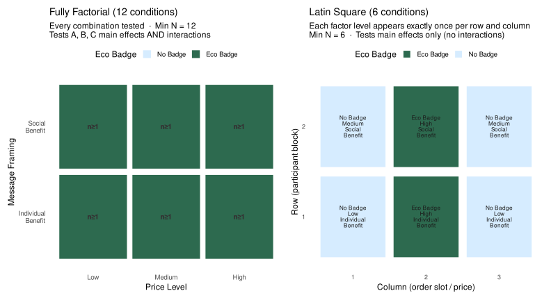
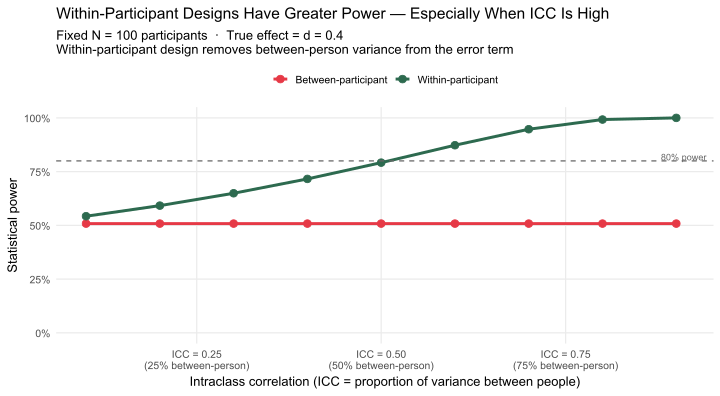
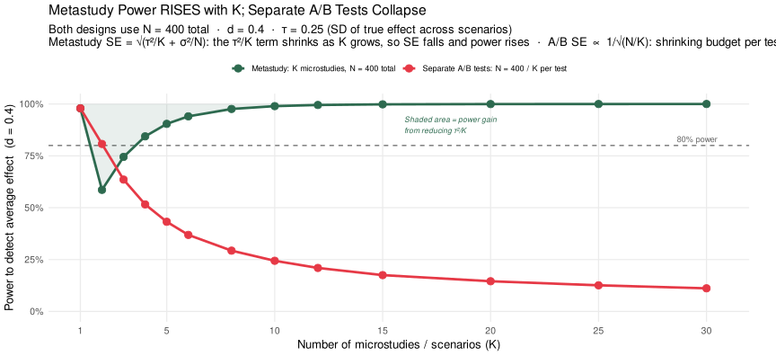
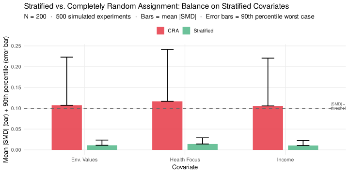
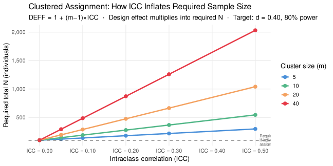

▶ Load required packages
library(tidyverse); library(ggplot2); library(knitr); library(scales); library(patchwork)
if (!requireNamespace("lavaan", quietly = TRUE)) install.packages("lavaan")
library(lavaan)
set.seed(2025)library(tidyverse); library(ggplot2); library(knitr); library(scales); library(patchwork)
if (!requireNamespace("lavaan", quietly = TRUE)) install.packages("lavaan")
library(lavaan)
set.seed(2025)Parts 2, 3, and 4 showed a fundamental tension:
Section 3 offered two partial design-based solutions (stratification, clustering). Here we go further: rather than trying to achieve orthogonality with brute-force N, we ask whether the experimental design itself can reduce the size of the design space you need to fill.
The simplest way to see the tradeoffs is to contrast three design types on a common example.
Scenario: You want to test the effect of:
# ── Fully factorial: all A×B×C combinations ──────────────────────────────────
fact_df <- expand.grid(
EcoBadge = c("No Badge", "Eco Badge"),
PriceLevel = c("Low", "Medium", "High"),
Framing = c("Individual\nBenefit", "Social\nBenefit")
) |>
mutate(cell = paste(EcoBadge, PriceLevel, Framing, sep = "\n"),
design = "Fully Factorial\n(12 cells, 12N total)")
# ── Latin square: Factor C varied across rows and Factor A×B as column×row
# 2×3 Latin Square (accommodate unequal levels by using 3×3 and dropping one row)
ls_grid <- expand.grid(Row = 1:2, Col = 1:3) |>
mutate(
EcoBadge = ifelse(Col %in% c(1, 3), "No Badge", "Eco Badge"),
PriceLevel = c("Low","Medium","High","High","Low","Medium"),
Framing = c("Individual\nBenefit","Social\nBenefit","Individual\nBenefit",
"Social\nBenefit","Individual\nBenefit","Social\nBenefit"),
design = "Latin Square\n(6 cells, 6N total)"
)
# ── CRD: just two cells (eco vs. no eco, collapsing B and C) ─────────────────
crd_df <- data.frame(
EcoBadge = c("No Badge", "Eco Badge"),
PriceLevel = "Pooled\n(B,C varied\nbut uncontrolled)",
Framing = "Pooled",
design = "Simple A/B (CRA)\n(2 cells, N total)",
Row = 1, Col = 1:2
)
# ── Plot factorial and latin square side by side ──────────────────────────────
p_fact <- ggplot(fact_df, aes(x = PriceLevel, y = Framing, fill = EcoBadge)) +
geom_tile(color = "white", linewidth = 1.2, width = 0.95, height = 0.95) +
geom_text(aes(label = paste0("n\u2265", ifelse(EcoBadge == "Eco Badge", "1", "1"))),
size = 3.5, fontface = "bold", color = "gray20") +
scale_fill_manual(values = c("No Badge" = "#d6ecff", "Eco Badge" = "#2d6a4f"),
name = "Eco Badge") +
labs(title = "Fully Factorial (12 conditions)",
subtitle = "Every combination tested \u00b7 Min N = 12\nTests A, B, C main effects AND interactions",
x = "Price Level", y = "Message Framing") +
theme_minimal(base_size = 12) +
theme(panel.grid = element_blank(), legend.position = "top")
p_ls <- ggplot(ls_grid, aes(x = factor(Col), y = factor(Row), fill = EcoBadge)) +
geom_tile(color = "white", linewidth = 1.5, width = 0.92, height = 0.92) +
geom_text(aes(label = paste0(EcoBadge, "\n", PriceLevel, "\n", Framing)),
size = 2.9, lineheight = 0.85, color = "gray10") +
scale_fill_manual(values = c("No Badge" = "#d6ecff", "Eco Badge" = "#2d6a4f"),
name = "Eco Badge") +
labs(title = "Latin Square (6 conditions)",
subtitle = "Each factor level appears exactly once per row and column\nMin N = 6 \u00b7 Tests main effects only (no interactions)",
x = "Column (order slot / price)", y = "Row (participant block)") +
theme_minimal(base_size = 12) +
theme(panel.grid = element_blank(), legend.position = "top",
axis.text = element_text(size = 9))
p_fact + p_ls
design_tab <- data.frame(
Design = c("Simple A/B (CRA)", "Fully Factorial", "Latin Square"),
`Conditions` = c(2, 12, 6),
`Min N (1 obs/cell)` = c(2, 12, 6),
`Main effects testable` = c("A only", "A, B, C", "A, B, C"),
`Interactions testable` = c("None", "A\u00d7B, A\u00d7C, B\u00d7C, A\u00d7B\u00d7C", "None"),
`Orthogonality coverage` = c("Only A vs. B,C confounded", "Perfect within cells", "Approximate — by design"),
check.names = FALSE
)
kable(design_tab,
caption = "Design comparison: efficiency, testability, and orthogonality coverage")| Design | Conditions | Min N (1 obs/cell) | Main effects testable | Interactions testable | Orthogonality coverage |
|---|---|---|---|---|---|
| Simple A/B (CRA) | 2 | 2 | A only | None | Only A vs. B,C confounded |
| Fully Factorial | 12 | 12 | A, B, C | A×B, A×C, B×C, A×B×C | Perfect within cells |
| Latin Square | 6 | 6 | A, B, C | None | Approximate — by design |
Recall from Section 3.6 that the required N for approximate orthogonality grows with the number of dimensions D and falls as \(r_{\max}\) increases. A Latin Square design directly reduces the effective D by structurally balancing factors across the design matrix rather than relying on chance:
The Latin Square is a direct structural solution to the Section 3 problem: it buys you orthogonality through design structure rather than through sample size.
Use the controls below to design your own Latin Square experiment. Set the number of factors, give each one a name and the number of levels you need, and specify your participant budget per cell. The grid updates instantly — colors show which level of the primary factor each cell receives, labels inside the cells show the other factors.
A Latin Square tests each factor’s main effect using the full sample, but it cannot detect whether factors interact (e.g., whether the eco-badge effect depends on price level). If an interaction is theoretically important, use a full factorial design for those two factors and apply the Latin Square only to the remaining ones.
# Replace Y, Factor_A, Factor_B, Factor_C with your actual variable names.
# Row and Column are nuisance blocking variables — always include them.
# Two-factor model
fit2 <- lm(Y ~ Factor_A + Factor_B + Row + Column, data = your_df)
emmeans(fit2, pairwise ~ Factor_A, adjust = "holm")$contrasts
emmeans(fit2, pairwise ~ Factor_B, adjust = "holm")$contrasts
# Three-factor model
fit3 <- lm(Y ~ Factor_A + Factor_B + Factor_C + Row + Column, data = your_df)
emmeans(fit3, pairwise ~ Factor_A, adjust = "holm")$contrasts
emmeans(fit3, pairwise ~ Factor_B, adjust = "holm")$contrasts
emmeans(fit3, pairwise ~ Factor_C, adjust = "holm")$contrastsIn all the designs above, we compared different people in different conditions. A within-participant (repeated-measures) design instead exposes the same person to multiple conditions, measuring the outcome each time.
Why does this increase power? Consider the source of variance in your data:
\[\text{Total variance in Y} = \underbrace{\text{Between-person variance}}_{\text{Heterogeneity across people}} + \underbrace{\text{Within-person variance}}_{\text{Each person's unique patterns}} + \underbrace{\text{Measurement error}}_{\text{noise}}\]
In a between-participant design, your treatment effect estimate must be separated from both between-person variance and measurement error. Between-person variance is typically the largest component — people simply differ from each other a lot, regardless of condition.
In a within-participant design, between-person variance cancels out because each person serves as their own control. You are estimating the effect within each person and averaging those within-person effects. The only remaining noise is within-person variance and measurement error — which are much smaller.
set.seed(2026)
# Parameters
true_effect <- 0.40 # true within-person effect (SD units)
icc_range <- seq(0.10, 0.90, by = 0.10) # ICC = between / total variance
power_comparison <- expand.grid(
icc = icc_range,
design = c("Between-participant", "Within-participant")
) |>
mutate(
# For fixed total N = 100, n_per_arm = 50 between, N = 50 for within
N = 100,
n_arm = 50,
# Between: variance includes between-person component (inflates denominator)
sd_eff_b = sqrt(1), # full SD
# Within: SD of the DIFFERENCE scores = sqrt(2*(1-icc)) * total_sd
sd_eff_w = sqrt(2 * (1 - icc)),
power_val = mapply(function(des, sd_e) {
tryCatch(
power.t.test(n = 50, delta = true_effect,
sd = sd_e, sig.level = 0.05,
type = ifelse(des == "Between-participant",
"two.sample", "paired"))$power,
error = function(e) NA_real_
)
}, design, ifelse(design == "Between-participant", sd_eff_b, sd_eff_w))
)
ggplot(power_comparison, aes(x = icc, y = power_val,
color = design, group = design)) +
geom_line(linewidth = 1.4) +
geom_point(size = 3.2) +
geom_hline(yintercept = 0.80, linetype = "dashed", color = "gray40") +
annotate("text", x = 0.91, y = 0.82, label = "80% power",
color = "gray40", size = 3.2) +
scale_color_manual(values = c("Between-participant" = "#e63946",
"Within-participant" = "#2d6a4f"),
name = NULL) +
scale_x_continuous(labels = function(x) sprintf("ICC = %.2f\n(%.0f%% between-person)", x, x*100)) +
scale_y_continuous(labels = percent_format(accuracy = 1), limits = c(0, 1)) +
labs(x = "Intraclass correlation (ICC = proportion of variance between people)",
y = "Statistical power",
title = "Within-Participant Designs Have Greater Power — Especially When ICC Is High",
subtitle = paste0("Fixed N = 100 participants \u00b7 True effect = d = ", true_effect,
"\nWithin-participant design removes between-person variance from the error term")) +
theme_minimal(base_size = 13) +
theme(panel.grid.minor = element_blank(), legend.position = "top")
The intraclass correlation (ICC) measures what fraction of total variance in Y is due to stable between-person differences. When ICC is high:
When ICC is low: - People are not very consistent — their responses vary randomly from occasion to occasion - Within-participant designs offer less of an advantage because the between-person variance that cancels out was small to begin with
Practical benchmark: for most psychological constructs (attitudes, preferences, perceptions), ICC values between 0.40 and 0.70 are common. In this range, within-participant designs typically require half to one-third the sample size of between-participant designs for equivalent power.
Within-participant designs also address the Section 3 problem in a specific and powerful way. Because each person sees multiple conditions, the entire design space for that person’s dimensions is held constant across conditions — by construction. Between-participant designs rely on random assignment to balance the design space across people; within-participant designs remove the need for that balance entirely within a person’s data.
The tradeoff is well known: carryover effects (condition A changes how the person responds to condition B), demand characteristics (participants figure out the hypothesis), and fatigue or practice effects. These are most severe when:
For short perceptual or preference tasks — including most WTP and product evaluation paradigms — within-participant designs are often feasible and substantially more efficient.
The Latin Square is efficient because it uses design structure to study multiple factors simultaneously. A related idea scales this up to the level of a research program: the metastudy (DeKay, Rubinchik, Li, & De Boeck, 2022, Perspectives on Psychological Science).
A metastudy is a single, pre-registered study that simultaneously tests many experimental factors — what DeKay et al. call facets — by crossing them in a balanced factorial design. Each participant sees one randomly sampled combination of facet levels (a microstudy); the researcher estimates each facet’s main effect by contrasting all participants who received the high level of that facet against all who received the low level, averaged across all other facets.
Why power INCREASES as more scenarios are crossed:
In a metastudy, each participant sees one randomly sampled combination of scenario levels — one microstudy. You have K microstudies total, each with n₁ = N/K participants. The researcher estimates the average main effect across all K microstudies using a meta-analytic average.
DeKay et al. (2022, Eq. 2) derive the standard error of that meta-analytic estimate:
\[\text{SE} = \sqrt{\frac{\tau^2}{K} + \frac{\sigma^2}{N}}\]
where \(\tau^2\) is the variance of the true effect across scenarios (effect heterogeneity — some contexts produce a stronger effect than others), \(\sigma^2\) is the within-person response variance, and \(N\) is the total sample. Two terms, and they behave very differently as \(K\) grows:
This means that for any fixed total N, power increases as you add more microstudies — even though each individual microstudy gets fewer participants. The gain comes from sampling the method space more densely, not from adding people.
Contrast this with running K separate, independent A/B tests using the same total budget. Each separate test gets only N/K participants, so its standard error grows as K increases. The metastudy and the separate-tests approach start from the same place at K = 1 and then diverge sharply in opposite directions.
Like in within-participant studies where we can parse out each participant’s unique patterns from the residual variance, because each condition is being crossed with other conditions orthogonally, we can parse the unique idiosyncrasies of each condition. This further reduces the residual variance, improving power.
\[\text{Total variance in Y} = \underbrace{\text{Between-person variance}}_{\text{Heterogeneity across people}} + \underbrace{\text{Within-person variance}}_{\text{Each person's unique patterns}} + \underbrace{\text{Within-condition variance}}_{\text{Each condition's unique patterns}} + \underbrace{\text{Measurement error}}_{\text{noise}}\]
# ── Parameters ────────────────────────────────────────────────────────────────
# d = average true effect size (Cohen's d) across all scenarios
# tau = SD of true effects across scenarios (effect heterogeneity)
# N = fixed total participant budget
N_total <- 400
d <- 0.28 # near 80% power at K=1 with N=400
tau <- 0.10 # moderate between-scenario heterogeneity
sigma <- 1.0
alpha <- 0.05
K_vec <- c(1, 2, 3, 4, 5, 6, 8, 10, 12, 15, 20, 25, 30)
# ── Analytical power (no simulation needed — formula is exact) ───────────────
#
# Correct SE derivation for metastudy (DeKay et al. 2022):
# K microstudies, each n = N/K participants, n/2 per condition.
# SE per microstudy = sigma * sqrt(4 / n) = sigma * sqrt(4K / N)
# Meta-analytic average of K independent estimates:
# Var(d̄) = (1/K²) * K * [sigma² * 4K/N + tau²]
# = 4*sigma²/N + tau²/K
# SE_meta = sqrt(4*sigma²/N + tau²/K)
#
# The 4*sigma²/N term is FIXED (all N participants contribute to the eco contrast).
# Only the tau²/K term shrinks as K grows → power rises monotonically for K ≥ 2.
#
# At K=1 a metastudy IS a single A/B test — the tau²/K scenario-sampling term
# does not apply (only one scenario, no averaging). Use A/B SE directly.
#
# Separate A/B tests: K independent studies, each with N/K participants
# SE_AB = sigma * sqrt(4 / floor(N/K)) [two arms of N/2K each]
# As K grows: floor(N/K) shrinks → SE_AB grows → power falls.
# The A/B test NEVER benefits from averaging across scenarios.
power_fn <- function(d, se, alpha = 0.05) {
z <- qnorm(1 - alpha / 2)
pnorm(d / se - z) + pnorm(-d / se - z) # two-sided normal approximation
}
meta_se_fn <- function(K) {
# K=1: same as one A/B test (no scenario averaging, tau²/K irrelevant)
# K≥2: correct DeKay formula — 4*sigma²/N is the fixed floor; tau²/K shrinks
ifelse(K == 1,
sigma * sqrt(4 / N_total),
sqrt(tau^2 / K + 4 * sigma^2 / N_total))
}
ab_se_fn <- function(K) sigma * sqrt(4 / pmax(4, floor(N_total / K)))
meta_label <- paste0("Metastudy: K microstudies, N = ", N_total, " total")
ab_label <- paste0("Separate A/B tests: N = ", N_total, " / K per test")
power_df <- data.frame(
K = rep(K_vec, 2),
power = c(sapply(K_vec, function(K) power_fn(d, meta_se_fn(K))),
sapply(K_vec, function(K) power_fn(d, ab_se_fn(K)))),
design = rep(c(meta_label, ab_label), each = length(K_vec))
)
# ── Ribbon data: vertical gap between metastudy and A/B power ─────────────────
ribbon_df <- data.frame(K = K_vec) |>
mutate(
meta_power = sapply(K, function(k) power_fn(d, meta_se_fn(k))),
ab_power = sapply(K, function(k) power_fn(d, ab_se_fn(k)))
)
color_vals <- c("#2d6a4f", "#e63946")
names(color_vals) <- c(meta_label, ab_label)
# Annotation: find K where metastudy-A/B gap is largest (for arrow placement)
gap_max_K <- ribbon_df$K[which.max(ribbon_df$meta_power - ribbon_df$ab_power)]
gap_max_y <- mean(c(ribbon_df$meta_power[which.max(ribbon_df$meta_power - ribbon_df$ab_power)],
ribbon_df$ab_power[which.max(ribbon_df$meta_power - ribbon_df$ab_power)]))
ggplot(power_df, aes(x = K, y = power, color = design, group = design)) +
geom_hline(yintercept = 0.80, linetype = "dashed", color = "gray40") +
annotate("text", x = 30.5, y = 0.83, label = "80% power",
color = "gray40", size = 3.2, hjust = 1) +
# shaded region = vertical distance between metastudy and A/B test curves
geom_ribbon(
data = ribbon_df,
aes(x = K, ymin = ab_power, ymax = meta_power),
inherit.aes = FALSE,
fill = "#2d6a4f", alpha = 0.12
) +
geom_line(linewidth = 1.3) +
geom_point(size = 3.5) +
annotate("text", x = gap_max_K + 1.5, y = gap_max_y,
label = "Shaded area =\nmetastudy advantage\nover A/B tests",
color = "#2d6a4f", size = 2.9, hjust = 0, fontface = "italic") +
scale_color_manual(values = color_vals, name = NULL) +
scale_y_continuous(labels = percent_format(accuracy = 1), limits = c(0, 1)) +
scale_x_continuous(breaks = c(1, 5, 10, 15, 20, 25, 30)) +
labs(
x = "Number of microstudies / scenarios (K)",
y = paste0("Power to detect average effect (d = ", d, ")"),
title = "Metastudy Maintains Power Across K; Separate A/B Tests Collapse",
subtitle = paste0(
"Both designs use N = ", N_total, " total \u00b7 d = ", d,
" \u00b7 \u03c4 = ", tau, " (SD of true effect across scenarios)\n",
"Metastudy SE = \u221a(\u03c4\u00b2/K + 4\u03c3\u00b2/N): dips slightly at low K then recovers \u00b7 ",
"A/B SE = \u221a(4\u03c3\u00b2/(N/K)): shrinking budget per test collapses power"
)
) +
theme_minimal(base_size = 13) +
theme(panel.grid.minor = element_blank(), legend.position = "top",
legend.text = element_text(size = 9),
plot.margin = margin(5, 30, 5, 5))
Reading the plot: at K = 1, both designs are identical — a metastudy with a single microstudy is just an A/B test — and they share the same power (~80% for d = 0.28 with N = 400). As K grows, the designs diverge. In the metastudy, K = 2 introduces a small dip in power (the τ²/K term is still non-trivial at K = 2), but power quickly recovers and rises as more scenarios average out the between-scenario heterogeneity — metastudy power asymptotes back toward its K = 1 level and beyond. In the separate A/B tests, each individual study receives only N/K participants, so the per-test SE grows and power falls monotonically. By K = 3 the metastudy already surpasses the A/B test; by K = 15 the metastudy is near its ceiling while the separate A/B tests have collapsed below 20% power. The shaded region shows the metastudy’s cumulative advantage — the vertical gap between the two curves — which grows steadily from K = 2 onward.
The practical upshot: a single well-powered A/B test answers the question “does this effect occur in this context?” A metastudy with many microstudies answers the question “does this effect occur in general?” — and does so with greater power for the same total N, once K is large enough to average out the between-scenario heterogeneity.
The connection to Section 3: a metastudy also directly reduces the Section 3 problem. By deliberately varying many potential confounders as factors in the design (rather than leaving them to chance), you ensure they are orthogonally distributed across conditions by construction — transforming unobserved confounders into measured experimental factors and extracting their effects cleanly.
The Latin Square and metastudy designs are pre-experimental solutions that achieve orthogonality through structure. Sometimes you cannot redesign the study — the assignment mechanism is fixed. The three designs below represent progressively stronger responses to assignment constraints.
In completely random assignment (CRA), each participant is independently assigned to a condition with equal probability. This is what most researchers do when they check “randomize” in Qualtrics.
CRA is unbiased in expectation: on average across infinitely many experiments, it achieves balance. But for any single experiment, balance is a matter of chance — and as Part 3 showed, that chance is often disappointingly low when Y is complex.
The idea: divide participants into groups (strata or blocks) based on measured covariates that you expect to relate to Y, then randomize within each block.
Concrete example: In the eco-coffee study, you know from Module 1’s analysis that “environmental values” is a strong predictor of WTP (β ≈ 0.8 SD). Before running the study, add a short pre-screening item to measure environmental values. Split participants into high vs. low environmental values strata. Then assign 50% to eco-label and 50% to control within each stratum.
Why it works: By randomizing within strata, you guarantee that each condition contains equal proportions of high- and low-environmental-values participants. This eliminates one source of latent imbalance — the most important one — by design rather than by chance.
set.seed(2026)
N_str <- 200
D_str <- 3 # three binary covariates to stratify on
n_sims <- 500
# Helper: absolute SMD for a covariate
abs_smd <- function(x, trt) {
m1 <- mean(x[trt == 1]); m0 <- mean(x[trt == 0])
s <- sqrt((var(x[trt == 1]) + var(x[trt == 0])) / 2)
if (s == 0) return(0)
abs(m1 - m0) / s
}
# Simulate one run under CRA and one under stratified
one_run <- function() {
# Participant covariates (binary)
X1 <- rbinom(N_str, 1, 0.45) # environmental values
X2 <- rbinom(N_str, 1, 0.50) # income
X3 <- rbinom(N_str, 1, 0.40) # health focus
# CRA
trt_cra <- sample(rep(0:1, N_str / 2))
# Stratified: randomize within each of 2^3 = 8 strata
strata <- paste(X1, X2, X3, sep = "-")
trt_strat <- integer(N_str)
for (s in unique(strata)) {
idx <- which(strata == s)
n_s <- length(idx)
trt_strat[idx] <- sample(c(rep(0, ceiling(n_s / 2)),
rep(1, floor(n_s / 2)))[seq_len(n_s)])
}
data.frame(
method = c(rep("CRA", 3L), rep("Stratified", 3L)),
cov = rep(c("Env. Values", "Income", "Health Focus"), 2L),
smd = c(abs_smd(X1, trt_cra), abs_smd(X2, trt_cra), abs_smd(X3, trt_cra),
abs_smd(X1, trt_strat), abs_smd(X2, trt_strat), abs_smd(X3, trt_strat))
)
}
set.seed(42)
strat_sims <- bind_rows(replicate(n_sims, one_run(), simplify = FALSE))
strat_summary <- strat_sims |>
group_by(method, cov) |>
summarise(mean_smd = mean(smd), p90_smd = quantile(smd, 0.90), .groups = "drop") |>
mutate(method = factor(method, levels = c("CRA", "Stratified")))
ggplot(strat_summary, aes(x = cov, y = mean_smd, fill = method,
ymin = 0, ymax = p90_smd)) +
geom_col(position = position_dodge(0.7), width = 0.6, alpha = 0.85) +
geom_errorbar(aes(ymin = mean_smd, ymax = p90_smd),
position = position_dodge(0.7), width = 0.25, linewidth = 0.8) +
geom_hline(yintercept = 0.10, linetype = "dashed", color = "gray40", linewidth = 0.8) +
annotate("text", x = 3.45, y = 0.105, label = "|SMD| = 0.10\nthreshold",
size = 3.0, color = "gray40", hjust = 0, lineheight = 0.85) +
scale_fill_manual(values = c("CRA" = "#e63946", "Stratified" = "#52b788"), name = NULL) +
labs(x = "Covariate", y = "Mean |SMD| (bar) + 90th percentile (error bar)",
title = "Stratified vs. Completely Random Assignment: Balance on Stratified Covariates",
subtitle = paste0("N = ", N_str, " \u00b7 500 simulated experiments \u00b7 ",
"Bars = mean |SMD| \u00b7 Error bars = 90th percentile worst case")) +
theme_minimal(base_size = 13) +
theme(panel.grid.minor = element_blank(), legend.position = "top")
Stratification dramatically reduces both the mean and worst-case imbalance on the stratified covariates. The 90th-percentile bar for CRA often exceeds the 0.10 threshold; the stratified version almost never does.
The limitation is the same as in Module 1’s measurement section: you can only stratify on what you have measured. Unstratified dimensions remain at the mercy of chance — which returns us to the need to map the construct Y first.
The idea: sometimes participants come in natural groups (classrooms, teams, branches, households), and the intervention must be assigned at the group level. In this case, you assign entire clusters to conditions.
Concrete example: You want to test whether providing eco-label information changes café purchasing behavior. You cannot assign individual customers within a café to different menu conditions simultaneously — contamination would occur. Instead, you assign cafés to conditions.
The tradeoff: clustering increases statistical efficiency when you have to intervene at the group level, but it also introduces intraclass correlation (ICC). If people within the same café are more similar to each other (they self-select into similar cafés), then your N cafés provide less independent information than N individuals would.
icc_vals <- c(0.00, 0.05, 0.10, 0.20, 0.30, 0.50)
cluster_sizes <- c(5, 10, 20, 40)
deff_df <- expand.grid(icc = icc_vals, m = cluster_sizes) |>
mutate(
DEFF = 1 + (m - 1) * icc,
Neff_80 = ceiling(
power.t.test(delta = 0.40, sd = 1, sig.level = 0.05, power = 0.80,
type = "two.sample")$n * DEFF
),
m_label = paste0("Cluster size = ", m)
)
ggplot(deff_df, aes(x = icc, y = Neff_80,
color = factor(m), group = factor(m))) +
geom_line(linewidth = 1.2) +
geom_point(size = 2.8) +
geom_hline(yintercept = power.t.test(delta = 0.40, sd = 1, sig.level = 0.05,
power = 0.80, type = "two.sample")$n,
linetype = "dashed", color = "gray40", linewidth = 0.7) +
annotate("text", x = 0.51, y = power.t.test(delta = 0.40, sd = 1, sig.level = 0.05,
power = 0.80, type = "two.sample")$n + 3,
label = "Required N\nif individual\nassignment",
size = 2.8, color = "gray40", hjust = 0, lineheight = 0.85) +
scale_color_manual(values = c("5" = "#4a90d9", "10" = "#52b788",
"20" = "#f4a261", "40" = "#e63946"),
name = "Cluster size (m)") +
scale_x_continuous(labels = function(x) sprintf("ICC = %.2f", x)) +
scale_y_continuous(labels = comma) +
labs(x = "Intraclass correlation (ICC)",
y = "Required total N (individuals)",
title = "Clustered Assignment: How ICC Inflates Required Sample Size",
subtitle = "DEFF = 1 + (m\u22121)\u00d7ICC \u00b7 Design effect multiplies into required N \u00b7 Target: d = 0.40, 80% power") +
theme_minimal(base_size = 13) +
theme(panel.grid.minor = element_blank())
| Feature | Stratified | Clustered |
|---|---|---|
| Unit of randomization | Individual (within strata) | Group / cluster |
| Effect on balance | Improves balance on stratified vars | No improvement (can worsen) |
| Effect on required N | Reduces N slightly | Increases N via design effect |
| When to use | When measured covariates predict Y strongly | When intervention must be applied at group level |
| Analogy (Module 1) | Pre-specifying subscales before CFA | Multi-level data with non-independent observations |
The core message: stratification and clustering both depart from simple CRA, but in opposite directions for power. Use stratification proactively when you can; account for clustering carefully when you must.
Every concept in this module is a direct extension of Module 1, applied to the treatment variable and the act of randomization rather than the outcome variable and the act of measurement:
| Module 1 (Measurement of Y) | Module 2 (Manipulation of X and Randomization) |
|---|---|
| Scale items are observables for a latent construct | Treatment assignment is an observable for latent randomization |
| Discriminant validity: does Y measure only what it should? | Exclusion restriction: does X activate only the intended pathway? |
| Construct breadth determines how many items you need | Construct breadth of Y determines how much N you need for orthogonality |
| Correlated subscales: efficient but can hide distinct pathways | Correlated latent dimensions: can ease orthogonality OR cascade failures |
| Open-ended text reveals the nomological net of Y | Open-ended text identifies unmeasured confounders and latent dimensions |
| Non-representative item sampling biases what the scale captures | Selection effects: platform self-selection, stimulus non-representativeness, attrition, and exclusion bias make the analyzed sample unrepresentative (Part 4) |
| Stratified measurement (subscales by domain) | Stratified randomization (block by measured covariates) |
| Multi-level data (participants nested in groups) | Clustered randomization (interventions at group level, ICC inflates required N) |
| Narrow constructs: few items, easy reliability | Narrow Y: small D, easy orthogonality, A/B suffices |
| Broad constructs: many items, hard to achieve discriminant validity | Broad Y: large D, orthogonality requires large N or structural design (Latin Square, metastudy) |
The common lesson — across both modules — is that observables are imperfect indicators of latent properties, and the gap between the observable and the latent grows with construct complexity. Researchers who map the latent space carefully (Module 1), design their manipulations and sampling deliberately (Module 2), and use the right statistical corrections when design solutions are insufficient (Module 3, Part 2) give themselves the best chance of making valid causal claims. Module 3 will formalize all of this in the language of causal inference.